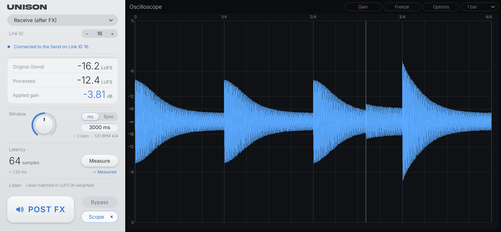
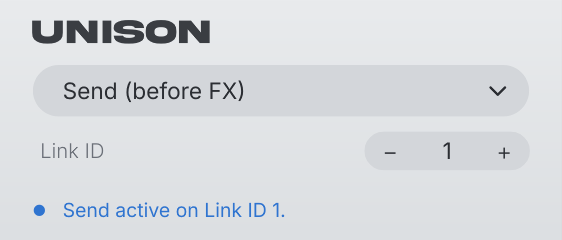
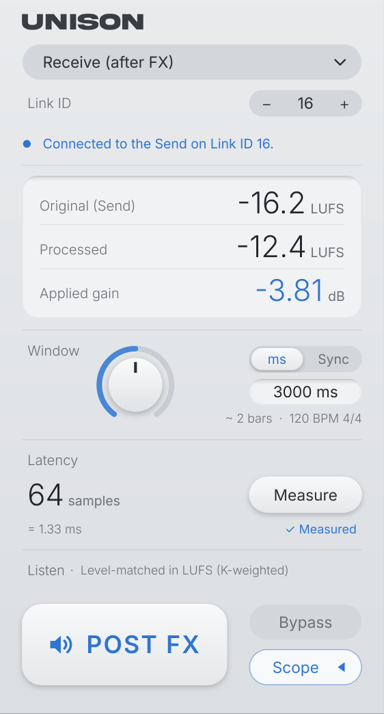
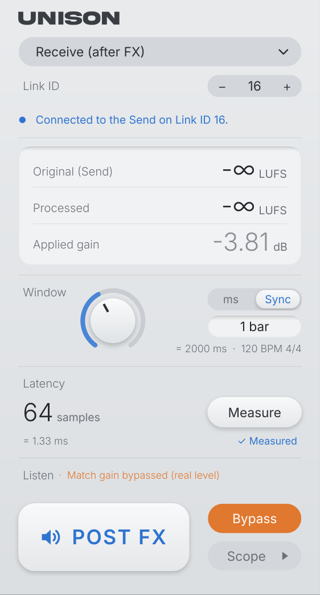
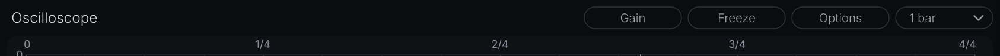

Cuando procesás un sonido (compresor, EQ, saturador…), casi siempre cambia también su volumen. Y lo que suena más fuerte parece sonar mejor, aunque no lo sea. UNISON te deja comparar el sonido antes y después de tus efectos al mismo volumen, para que juzgues solo lo que cambió.
Funciona con dos instancias del mismo plugin en la misma pista:
Además trae un osciloscopio sincronizado al tempo para ver la onda, compás por compás.
UNISON.zip. Queda una carpeta UNISON con el plugin, el instalador y este manual.instalar.command.
Si macOS muestra un cartel que dice que no puede verificarlo y te ofrece Move to Trash (tirarlo a la papelera), tocá Done y:
instalar.command. Tocá Open Anyway y confirmá con tu contraseña o Touch ID.instalar.command y, si pregunta otra vez, tocá Open.bash ~/Downloads/UNISON/instalar.command

| Mensaje | Qué significa |
|---|---|
| Connected to the Send on Link ID N. | Todo bien: recibe el audio del Send. |
| Connected to Send on Link ID N · no audio yet | Encontró el Send, pero todavía no le llega audio (proyecto recién abierto, pista vacía o Logic parado). No es un error. |
| No Send on Link ID N. | No hay ningún Send con ese número. Revisá el Link ID de los dos. |
| More than one Send on Link ID N: change one. | Dos Send usan el mismo número. Cada pista tiene que tener el suyo. |
Podés usar UNISON en varias pistas a la vez: cada par Send/Receive con su propio Link ID (de 1 a 16).

Receive / Send elige el modo. Link ID conecta un Send con su Receive: con − y + o con un clic en el número para escribirlo.
Con el DAW en pausa, los números bajan de a poco a −∞, pero la medición no se borra: al volver a dar play sigue desde ahí y la ganancia arranca estable. Clic sobre los números = borrar la medición y medir de cero.
Cuánto tiempo promedia la medición. En ms elegís milisegundos (de 100 a 60000; por defecto 3000). En Sync elegís compases (de 1/4 bar a 8 bars) según el tempo del proyecto, y la lectura de un loop queda quieta. Abajo ves la equivalencia.
Compensa efectos que retrasan el audio. Con el tema sonando, tocá Measure: en unos segundos encuentra el retraso exacto, con decimales, y lo muestra en samples y en ms. Si el procesado no se parece lo suficiente al original (por ejemplo, una reverb 100% wet), te avisa en vez de poner un valor dudoso. Si cambiás los efectos, volvé a medir.

El botón grande alterna lo que escuchás:
El cambio tiene un crossfade de 10 ms, así que no hace clicks. Es un parámetro del DAW, así que lo podés asignar a una tecla o a un control MIDI para comparar sin mirar la pantalla. El volumen se mide en LUFS (filtro K, ITU-R BS.1770).
Apaga el igualado: con Bypass prendido (naranja), POST FX suena con su volumen real. La ganancia se sigue midiendo y se ve en gris, y al lado de Listen dice “Match gain bypassed (real level)”. Se puede automatizar.
Abre y cierra el osciloscopio. Cerrado queda solo esta columna. Se acuerda de cómo lo dejaste.

Muestra la onda que estás escuchando: PRE FX en gris o POST FX en azul, ya nivelado al volumen del original. Al alternar, la onda nueva va apareciendo a medida que avanza el cabezal.
| Botón | Qué hace |
|---|---|
| Gain | Dibuja una línea punteada al nivel de la ganancia aplicada. Otro clic la saca. |
| Freeze | Congela el osciloscopio (ideal para hacer zoom con calma). Otro clic lo descongela. |
| Options | Channels: L + R (sum), L only, R only o L and R split (L arriba, R abajo). Grid: la resolución de la grilla (Auto, que se achica con el zoom, o fija en 1/4 a 1/64), Show grid (mostrar las líneas) y Triplet grid (grilla en tresillos). |
| Largo (1 bar…) | Cuántos compases entran a lo ancho. |
Con la rueda del mouse o pellizcando el trackpad, centrado donde está el mouse, hasta ver la onda muestra por muestra. Arrastrá (o deslizá de costado en el trackpad) para moverte, y tocá Show all (abajo a la izquierda) para volver a ver todo. Funciona en vivo y congelado.
Al pasar el mouse aparece una línea horizontal con su valor en dB. Clic: la línea queda fija. Clic sobre ella o sobre su cartelito: la saca. Doble clic: escribís un valor exacto (por ejemplo −6) y Enter.
Sirve, por ejemplo, para ver cuánto achica un compresor los golpes: alterná PRE y POST y fijate cuánto bajan los picos.
| Problema | Solución |
|---|---|
| El DAW no muestra UNISON (o muestra el nombre viejo) | Revisá que el instalador haya dicho “Listo” y hacé que el DAW vuelva a buscar plugins:
|
| “No Send on Link ID…” | El Send y el Receive tienen que tener el mismo Link ID, y el Send tiene que estar antes de los efectos. |
| “More than one Send…” | Dos pistas usan el mismo Link ID: cambiá uno. |
| PRE y POST suenan desfasados o “huecos” | Falta compensar latencia: tocá Measure con el tema sonando. |
| Measure avisa que no pudo medir | El procesado es muy distinto del original (reverb 100% wet, efectos muy fuertes). Probá medir con el efecto más suave (por ejemplo, la reverb menos wet) y después volvé a subirlo. |
| Applied gain muestra “—” | Todavía no hay audio medido: dale play. |
Con el DAW cerrado, hacé doble clic en desinstalar.command o pegá en la Terminal:
bash ~/Downloads/UNISON/desinstalar.command
Si macOS muestra el cartel de “Move to Trash”, hacé lo mismo que con el instalador: System Settings > Privacy & Security → Open Anyway.